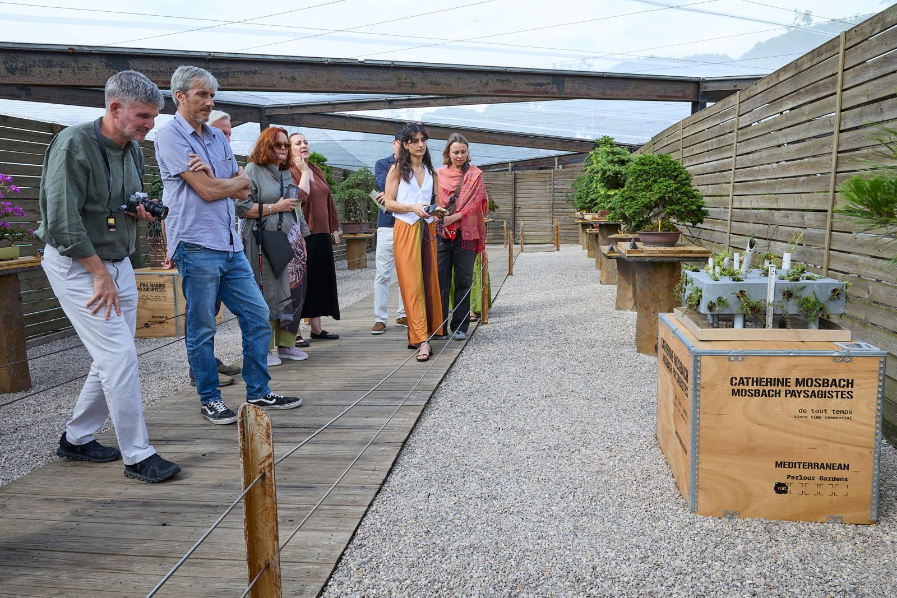
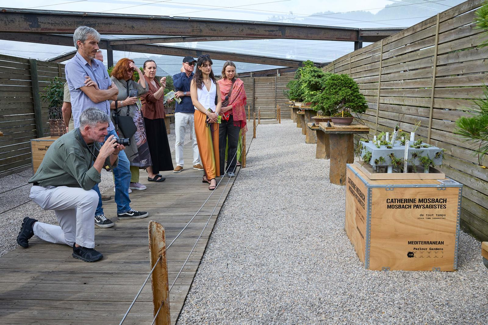
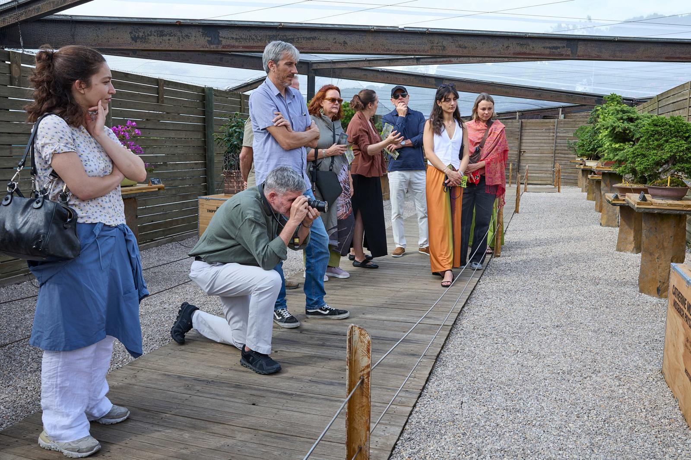
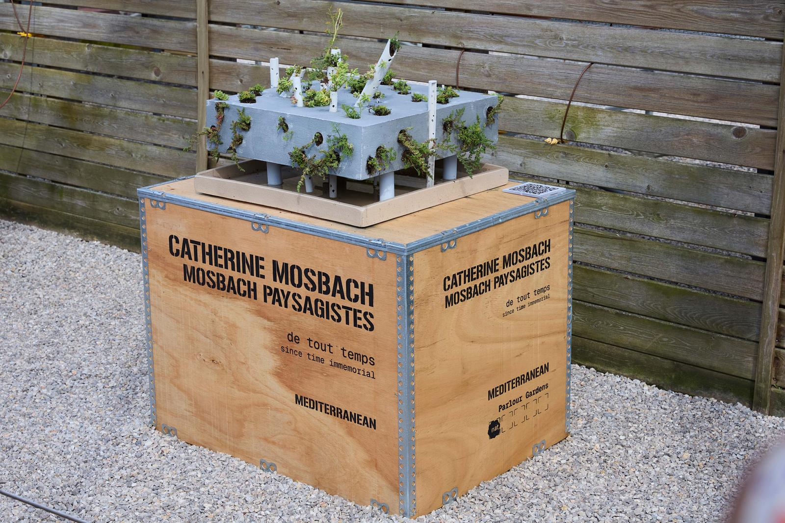
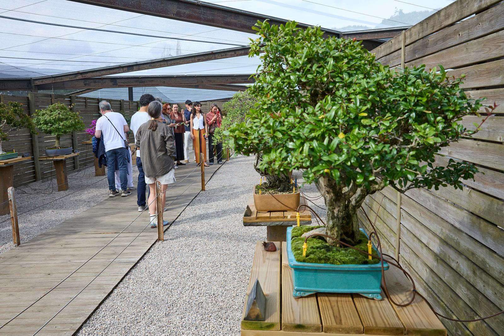

De tout temps
Since time immemorial
Explores the spectrum of influences that give rise to energy and life on Earth, ranging from interstellar dimensions – we all come from the stars and will undoubtedly return there – to those of more subtle variations – from the most intimate: interiors – to the most exposed: exteriors. Our landscape horizon challenges the interfaces between architecture and environment, but even more so the ‘infrastructures’ that constitute them. It is about the in-between, from one state to another, from shadow to light, from one phase to another, from the sub-microscopic dimension of a cell to that of an environment made available to the greatest number.
De tout temps is an allegory that aims to make visible a fabric of life, underestimated by those who transform and plan cities, or reduced to the category of services. De tout temps hosts the performance of microorganisms that make their way from below to above and illustrates a gradual metamorphosis from the infra mince to the plant. The experimental process began with the oldest form of plant life-cyanobacteria, the ancestors of mosses and fungi- collected from Catalan environments, cultured, and then placed within the installation until they reached the surface. They advance their colonization through the interstices. They are the first forms of life to produce humus. Paired with the infra mince, which will take its time, primary plants will choose their trajectory, visible through the oculi of the temporary envelope De tout temps.
De tout temps, has embodied in miniature – from plant to human – the potential of the Place de la République in Paris. The tubes infrastructure (Lines 5-9-3-11-8) accommodates people in transit deep underground, their numbers equivalent to the sedentary population above ground. These enclosed spaces act as air exchange points, with air expanding under the effect of heat and rising more easily towards the upper strata. The potential of human flows extends to fluid kinetics (wastewater, rainwater, gases), the movement of waves (electricity, light, sound) and the movement of organic beings (dissemination, reproduction, multiplication…). The reference to the living environment evokes dynamic characteristics at all scales in space and time.
Active and reactive flows are rendered invisible and unexplored in most urban centers; conversely, possibilities -where fluids, stocks and soils are channeled through a landscape project-
De tout temps is dedicated to Claude Figureau, the whistleblower who exposed this invisibility.





